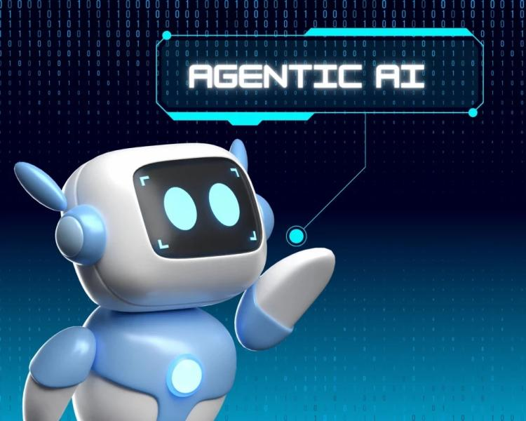

Agentic AI describes AI systems that are designed to autonomously make decisions and act, with the ability to pursue complex goals with limited supervision. It brings together the flexible characteristics of large language models (LLMs) with the accuracy of traditional programming. This type of AI acts autonomously to achieve a goal by using technologies like natural language processing (NLPs), machine learning, reinforcement learning and knowledge representation. It’s a proactive AI-powered approach, whereas gen AI is reactive to the users input. Agentic AI can adapt to different or changing situations and has “agency” to make decisions based on context. It is used in various applications that can benefit from independent operation, such as robotics, complex analysis, and virtual assistants [1].
500+ AI Agent Projects/UseCases
[1] Teaganne Finn, Amanda Downie, "Agentic AI vs. generative AI", The 2025 Guide to AI Agents, IBM.
